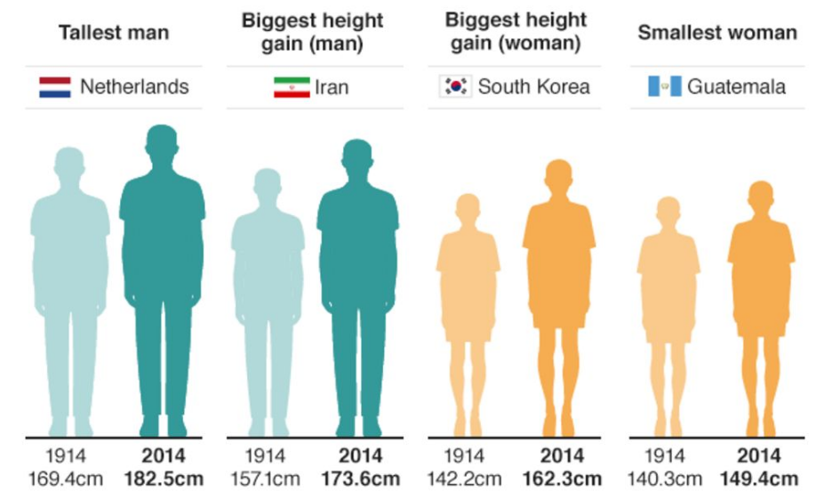
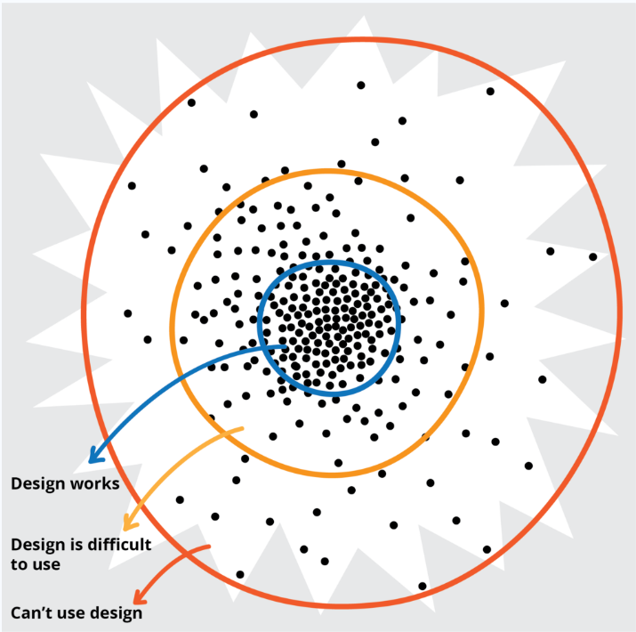

Note
Go to the end to download the full example code. or to run this example in your browser via JupyterLite
Intersectionality in Mental Health Care#
This notebook was written by Yifan Wang, Marta Maslej, and Laura Sikstrom and is licenced under a Creative Commons Attribution 4.0 International License.
There is an increasing interest in applying innovations in artificial intelligence to provide more efficient, precise, or personalized patient care. Specifically, the ability of machine learning (ML) to identify patterns in large and complex datasets holds tremendous promise for solving some of the most complex and intractable problems in health care. However, there are ongoing questions [1] about a range of known gendered and racialized biases - arising from diagnostic tools, clinical interactions, and health policies - that get baked into these datasets. In nephrology, for example, algorithms developed to estimate glomerular filtration rate assign higher values (which suggest better kidney function) to Black individuals [2], which could delay treatent for this patient group while ultimately worsening outcomes. In turn, any ML algorithms that are trained on this data could exhibit differences in predictive performance across certain groups - not by any flaw of the algorithm itself, but because it is capturing societal biases that are encoded into the data itself. Upon deployment, these tools can amplify harms for marginalized populations, particularly those defined by intersections of features (e.g., gender, race, class).
In this tutorial, we will examine another instance of this: in psychiatric diagnosis data, Black men are much more likely to be misdiagnosed with schizophrenia as compared to white men due to factors such as diagnostic bias by clinicians. Through this case study, we demonstrate the value of applying an interdisciplinary approach to analyzing intersectional biases, towards ensuring that these innovative tools are implemented safely and ethically.
Learning objectives. This notebook has three main learning objectives. After this tutorial, we hope that you will be able to:
Think critically about how populations can be defined and how this relates to the measurement, identification, and interpretation of health inequities
Explain the advantages of an intersectional approach to research
Conduct an intersectional bias assessment of simulated psychiatric data, based on a finding from the psychiatric literature
What is a fair machine learning model?#
Sikstrom et al (2022) identify 3 general pillars of fairness as it pertains to ML: Transparency, Inclusion, and Impartiality [3]
Transparency: A range of methods designed to see, understand, and hold complex algorithmic systems accountable in a timely fashion.
Inclusion: The process of improving the ability, opportunity, and dignity of people, disadvantaged on the basis of their identity, to access health services, receive compassionate care, and achieve equitable treatment outcomes.
Impartiality: Health care should be free from unfair bias and systemic discrimination. Deploying a ML algorithm requires a sociotechnical understanding of how data is collected and interpreted within algorithmic system in order to ensure its responsible implementation in a clinical setting.
Although all aspects of fairness are equally important, this tutorial will focus on impartiality. Specifically, we aim to examine fairness through the scope of intersectionality, which was originally coined by Kimberle Crenshaw [4]:
Intersectionality is a framework for understanding how different forms of inequality (e.g., gender and race) often operate together and exacerbate each other.
While by no means exhaustive, this serves as a useful frame that can be coupled with other fairness approaches to enable a more thoughtful discussion of fairness-related issues.
Who and what is a population?#
When we do a fairness assessment, we need to decide which groups of people to compare to identify whether there is some kind of fairness-related harm occurring.
The key question in being able to do so is this: Who and what is a population? It may seem like this question is trivial, and has a clear-cut meaning in no need of further clarification. However, researchers like Nancy Krieger have pointed out that a clear notion of “population” is rarely defined [5], despite its centrality to fields like ML fairness.
As such, seeking a clearer answer to this question is central to ML because it enables us to determine how and when can populations be meaningfully and appropriately compared, and allows a recognition of when such comparisons may be meaningless, or even worse, misleading.
A reflective activity#
“Every man is in certain respects, like all other men, like some other men, like no other men.” – Murray and Klukholne (1953).
Consider a group or community that you’ve been part of. This could be anything from group of friends or colleagues, to the people you’re currently sitting next to. Consider the following questions:
What is something that your whole group has in common? For example, on a soccer team, this might be the fact that everyone plays soccer.
What is something that some of your group has in common? Going off the same soccer team example, perhaps some of the team identifies as boys, while some of the team identifies as girls.
What is something that makes each of you unique? Perhaps everyone is a different height, or everyone grew up in a different neighborhood.
First, notice the intersectional approach that we took with this activity - each individual is not defined by features about themselves in isolation, but the intersection of many different identities, which constitutes the experience of that individual.
Second, note that disparities can result from both the factors that make us the same, and the factors that make us different. We need to keep this idea in mind - when we’re comparing groups, are these meaningful differences that we’re comparing, and how do we know? For example, a potential similarity between a group of people is that “all of us wear glasses” - but does this constitute a meaningful way to compare groups of people? Answering this question requires context, and can help us identify biases in our judgement that can lead to fairness harms, and think about possible solutions.
Let’s look at a real-life example to see how exactly this is important.
In 2011, a paper studying the epidemiology of cancer noted that “early onset ER negative tumors also develop more frequently in Asian Indian and Pakistani women and in women from other parts of Asia, although not as prevalent as it is in West Africa.” [6]
At first glance, this seems like a reasonable comparison that helps establish the basis for certain populations having a higher prevalence of cancer.
However, Krieger points out that the cancer incidence rates used to arrive at this conclusion are based on:
For Pakistan, the weighted average of observed rates within a single region
For India, a complex estimation involving several rates in different states
For West Africa, the weighted average for 16 countries: - 10 of these countries have rates estimated based on neighboring countries - 5 rely on extrapolation from a single city within that country - Only one has a national cancer registry
This added context makes it clear that these population comparisons are not so clear-cut, and that perhaps there is more nuance we need to be mindful of than we first thought.
Defining a population#
How then, should we conceptualize populations to enable the nuanced understanding required when we compare them? To give some background on this work, we will again draw on some of the work of Nancy Krieger, an epidemiologist who has written extensively on the concept of populations.
Populations as statistical entities#
Much of Krieger’s work stands in contrast to the conventional definition of population, which is limited to an understanding of populations as statistical objects, rather than of substantive beings. This definition is as follows:
Statistical view on populations. Populations are (statistical) entities composed of component parts defined by innate (or intrinsic) attributes’
Implicit in this definition is a notion of causality: if populations differed in their means, this indicated that there was either a difference in “essence, or in or external factors, that caused this difference between populations. To this end, populations can be compared on the basis of their means because they are caused by comparable differences.
This idea that humans have innate and comparable attributes was largely derived from Adolphe Quetelet’s invention of the “Average Man,” [7] establishing the notion of a population mean.
Originally a physicist, Quetelet borrowed the idea from astronomy, where the “true location” of a single star was determined the observations done by multiple observatories. Applied to populations, this meant that observing the characteristics of multiple/all the individuals within a group allowed the establishment of a “true mean” like human height, or body weight (which is how we got the Body Mass Index).
While the population mean of a star is a descriptor of its position in space, the population mean of a human population depends on how that population is defined. For example, recall our reflective activity: those similarities and differences constitute how one might define a group. This raises some interesting questions and issues.
The issues#
“For a start, the location of the mean referred to the location of a singular real object, whereas for a population, the location of a population mean depended on how the population was defined.”
We could define a population as all those who are human, or perhaps all those who are of a certain nationality, or many other possibilities. Thinking back about the reflective activity, the elements that your group had in common and those that were different are all elements that could help define a population.
Crucially, we need to be careful about how we define a population, because it can impact the results we get from any analyses - perhaps it might skew them, or perhaps the lack of appropriate comparison groups might render an analysis inappropriate. Let’s look an example of this from a 2016 BBC article [8] which compares body heights:
{kind=link}
On the basis of what population definitions are these comparisons being made? In this case, comparisons are being made between genders, nationalities, and time frames.
But consider this - what exactly makes it meaningful to compare 1914 to 2014? How can we truly interpret this data? We don’t have a frame of reference for how each population is defined. We don’t know their ages, we don’t how the data was collected, and we don’t know why nationality was considered an appropriate characteristic for comparison. These elements are critical in establishing the context for whether something can be considered a meaningful comparison, and in their absence, we are left questioning.
This article is hardly unique in this problem - body mass index (BMI) has become a ubiquitous way of defining obesity, but comparing individuals on the basis of their BMI is problematic: the scale was built by and for white populations, leading to an overestimation of health risks for Black individuals [9], and an underestimation of health risks for Asian individuals [10]. Even more interestingly, BMI was never meant to be a way of measuring health at an individual level. [11]
The point is this: social relations, not just individual traits, shape population distributions of health.
What this means is that we cannot exclude the context that social relations between populations illuminate. This could include anything from gender dynamics, to class disparities, to differing economic systems - all of which can have differing impacts on human health.
This point is especially important because of how heterogeneous humans are, across space and time, both between groups and within groups. Someone who has written extensively about this in relation to ML, disability, and design is Jutta Treviranus.
Treviranus points out that the further you get from a population mean, the more heterogeneous the population gets. And as you move away from this “average mean” - not only do people get more diverse from one another, but solutions that are designed with the population mean in mind are increasingly ineffective. [12]
{kind=link}
Notice the parallel we are drawing throughout here - we must always be thinking about how we compare people, and how we can make those comparisons meaningful.
Proposition 2#
Given these limitations, let’s consider an alternative understanding of a population that Krieger[5] proposes.
Populations are dynamic beings constituted by intrinsic relationships both among their members and with other populations that together produce their existence and make causal inference possible.
What Krieger points out here, is that to make conclusions about differences between populations, we need to understand how these populations came to be, and how we define them.
Krieger’s view emphasizes that identity is not a fixed attribute (like a star), but rather a fluid social process. A great example that illustrates the degree to which identity can change can be seen in the racial identity of Puerto Ricans in the aftermath of Hurricane Maria. [13] Following the hurricane, there was a 72% drop in the amount of Puerto Ricans identifying as white. Did all the white people move away? Nope - they just no longer thought of themselves as white. The significant shift can be largely attributed to Puerto Ricans feeling as though they had been neglected by the US government in their inadequate response to the hurricane, and as such, redefined themselves as Latinx. That’s an entire population collectively deciding to change their racial identity, and gives an example of just how dynamic - and unpredictable - identity can be.
This definition of populations also recognizes that this social process is linked to a history of racism and sexism. For instance, people’s skin color was taken as being intrinsically related to specific characteristics - a stereotype which has promoted all sorts of inequalities in today’s society.
A notion of populations that emphasizes their dynamic nature is helpful because it helps understand the relationships between these different groups, like gender, class, and religion - all social constructions that have meaning for us. It acknowledges that we’re all working within these systems through various different lenses, and within different dynamics of power and privilege. The graphic below is a great representation of that - of how varied all of our different experiences can be:
Intersectionality is a lens through which you can see where power comes and collides, where it locks and intersects. It is the acknowledgement that everyone has their own unique experiences of discrimination and privilege. –Kimberle Crenshaw
![In the graphic above, Sylvia Duckworth uses a Spirograph to illustrate the multitude of ways that social identities might intersect. The Spirograph is split into 12 overlapping circles, each numbered, connected to a specific social identity, and assigned a unique colour. To illustrate the intersections of the different social identities, where each circle intersects, a new shade of the original colour is visible (as would happen when mixing paint colours together). At a glance the graphic shows all colours of the rainbow in different shades. The 12 social identities listed are: race, ethnicity, gender identity, class, language, religion, ability, sexuality, mental health, age, education, and body size. A quote from Kimberlé Crenshaw appears beneath the spirograph that reads “Intersectionality is a lens through which you can see where power comes and collides, where it locks and intersects. It is the acknowledgement that everyone has their own unique experiences of discrimination and privilege.” "Intersectionality" by Sylvia Duckworth, licensed under a `CC-BY-NC-ND`<https://creativecommons.org/licenses/by-nc-nd/2.0/> license.](../_images/imhc_intersectionality.jpg)
Critical race theory#
Ain’t I A Woman?#
Note that although this intersectional approach has only recently been applied to ML, it is not a novel concept. Rather, it’s a well-established idea that stretches back nearly 200 years to the Black feminist and the suffragette movement, when white women were fighting for the right to vote, but Black women were left out of this call for reform. There were a range of Black activists and scholars who responded to this - wondering “What about me? Don’t I matter?”
For example, let us consider a quote from Sojourner Truth - an enslaved person at the time. [14]
That man over there says that women need to be helped into carriages, and lifted over ditches, and to have the best place everywhere. Nobody ever helps me into carriages, or over mud-puddles, or gives me any best place! And ain’t I a woman? Look at me! Look at my arm! I have ploughed and planted, and gathered into barns, and no man could head me! And ain’t I a woman? I could work as much and eat as much as a man - when I could get it - and bear the lash as well! And ain’t I a woman? I have borne thirteen children, and seen most all sold off to slavery, and when I cried out with my mother’s grief, none but Jesus heard me! And ain’t I a woman?
What she’s saying is “I am a woman - yet all these social factors, like slavery, have somehow disenfranchised me from this feminist movement that’s going on.” In asking “Aint I A Woman?”, Sojourner Truth is really asking the question that’s been central to our discussion - what makes a population? Defining a population a specific way, like ignoring the realities of Black women, can cause a lot of harm.
Critical race theory#
Critical race theory is an iterative methodology that draws on the collective wisdom of activists and scholars to study and transform the relationship between race, racism, and power. – Ford and Airhihenbuwa[15]
Intersectionality is one tool within the critical race theory toolkit, among many others, and there has already been some great work [16] done on how critical race theory (CRT) may be applied to algorithmic fairness, such as the need for disaggregated analysis that operates on a descriptive level in order to interrogate the most salient aspects of race for an algorithmic system. A central element of CRT, especially as it relates to ML systems, echoes a theme we have already discussed extensively: how we define a group of people matters. The power to define a group of people matters, and we need to question our assumptions about what makes people have something in common, and how that might affect our ability to compare populations.
The practical applications to machine learning#
In practice, the focus on these intersectional comparisons within the ML field has been on protected groups [17], such as:
Race, national or ethnic origin, color
Religion
Age
Sex
Sexual orientation
Gender identity or expression
Family status
Marital status
Disability, genetic characteristics
We have legal obligations to ensure that any medical interventions do not discriminate against individuals on the basis of these attributes, so it makes sense that most of the ML fairness assessment have taken place on race, sex or gender.
However, it’s important to note that protected groups vary substantially between countries, and even across specific applications within a country. Within the United States, for example, the Fair Housing Act recognizes disability and gender identity as protected classes while the Equal Credit Opportunity Act does not.
Furthermore, the social determinants of health that are known to impact health inequalities, such as class, language, citizenship status (e.g., undocumented), and geography (e.g., rural vs urban) are not protected groups. How these issues are understood and measured in the literature are quite varied. This means that we understand some ways that ML can lead to fairness harms, but there are many fairness harms happening that we know almost nothing about.
Case Study: Mental Health Care#
We now turn to a case study on a hypothetical scenario, where we train a machine learning model to predict a patient’s diagnosis in a mental health care setting.
Note
The scenario considered in this case study is overly simplified and based on a simulated data set. But we hope it gives you a sense of how the application of ML can exacerbate biases in training data, and how we can evaluate models for bias from an intersectional perspective.
Scenario#
To highlight the way that fairness harms has been evaluated in health care, we will first examine a study by Obermeyer et al.[18].
Algorithmic Fairness in Health Care#
Obermeyer et al.[18] examined a risk assessment algorithm for health insurance across approximately 50000 primary care patients. This algorithm was used to identify individuals who required further follow-up for complex care.
The authors found that this algorithm was underestimating disease severity in Black clients. Why might this be the case?
They proposed several issues:
First, the algorithm used total health expenditures as a proxy for disease severity. This is problematic because health expenditures might vary based on socioeconomic status, and poverty levels in Black populations tend to be higher. As such, even if someone is very sick, they may be unwilling or unable to spend money on health care. There may also be an issue of trust involved, but in short, the authors didn’t truly understand what was going on.
One of the things they point out, however, is that the bias which they encountered - termed “Labelling Bias” - is pernicious, because labels are measured with inequities built into them. In other words, when the labels on a dataset carry structural inequities, those biases are unknowingly built in (we will examine this further in the applied component of this tutorial).
The authors also note that although the developers of the algorithm assumed that Black and white people had some meaningful difference, they didn’t distinguish between the two groups based on income or gender - this likely led to an underestimation of how poorly this model might be estimating risk for certain groups of people.
A similar issue is presented by Buolamwini and Gebru in the gender shades project, which analyzed fairness issues in facial detection software and found that the AI system led to larger errors for dark-skinned women than for other groups. [19]
With the problems that Obermeyer and colleagues investigated related to using proxies as labels and keeping intersectionality in mind, let’s move forward with an applied problem of our own.
Background: Schizophrenia#
Our case scenario for this practice component of the tutorial is based on the finding that Black patients (and men in particular) are diagnosed with schizophrenia at a higher rate than other demographic groups (for example, white men). [20]
Schizophrenia is a severe, chronic, and debilitating illness characterized by various symptoms, which are broadly divided into positive and negative symptoms. Positive symptoms include the symptom types that generally come to mind when thinking about schizophrenia, like delusions, hallucinations, disorganized speech and thought, but negative symptoms are also common. These include a lack of emotion, motivation, or interest.
It’s unclear why Black patients are more likely to be diagnosed with this disorder, but it’s likely that different factors play a role, such as genetics or being more likely to reside in stressful environments (which can be a risk factor for developing schizophrenia). However, there is also some pretty compelling evidence [21] that this effect is due to diagnostic bias, or clinicians misdiagnosing black patients with schizophrenia when they have another illness, like an affective disorder or depression instead. Clinicians may be underemphasizing symptoms of depression in black patients and overemphasizing psychotic symptoms, leading to misdiagnosis (and higher rates of schizophrenia). This tendency may be particularly pronounced for Black men.
Why is this important?
Misdiagnosis can have negative downstream effects [22], leading to inequities in care. Schizophrenia is a more serious and stigmatized illness than affective disorder, it has a poorer prognosis, and involves treatments with greater side effects. Misdiagnosis can delay getting the right treatment, increase patient frustration and distrust, and worsen illness, all of which may be disproportionately affecting one subgroup of the population defined by at least two intersecting features that we know of (gender and race).
The hypothetical scenario#
Based on this finding, we’ve developed a hypothetical scenario. You should note that this scenario (and the simulated data we’re using) is overly simplified. But we hope it gives you a sense of how the application of ML can exacerbate biases in training data, and how we can evaluate models for bias from an intersectional perspective.
Imagine we have some electronic health record data on 10,000 patients who have been diagnosed at Health System A with either affective disorder (denoted with 0) or schizophrenia (denoted with 1) over the past 10 years. This data contains information on their sex, race, some psychosocial information, and information from clinical assessments on their symptoms. Hospital executives have had a classifier built that will take this information collected about a patient at intake, and assign a diagnosis of either affective disorder (0) or schizophrenia (1). They train a binary classifier on the data to assign new incoming patients a diagnosis, to triage them into the appropriate clinic for treatment.
Now, let’s say this hospital is run by some executives who would really like to cut costs. They don’t want to do any further assessment after classification, and they are planning to administer treatments to patients following this automated triage.
But first, hospital executives must provide must provide some evidence to stakeholders that this classifier works well in diagnosing patients, so they ask the data science team to collect a test sample of 1000 patients, on which they must evaluate the model. The executives argue that the classifier works very well, based on some impressive sensitivity and specificity values. The stakeholders are not fully convinced (thinking that the executives may be a little too eager to get this model deployed), so they hire us (an independent consulting firm) to evaluate the model.
Note that this is one overly simplistic component of our case scenario. Typically, much more consideration and evaluation would occur before ML is deployed in a real-life setting, especially in healthcare. When it comes to complicated diagnoses (like schizophrenia), any use of ML is also likely to complement human or clinical judgment.
Model Development#
Let’s build our first machine learning model. First, we need to import the required libraries and data set.
import matplotlib.pyplot as plt
# Import relevant libraries
import numpy as np
import pandas as pd
import seaborn as sns
import sklearn.metrics as skm
from sklearn.datasets import fetch_openml
from sklearn.linear_model import LogisticRegression
from sklearn.preprocessing import MinMaxScaler, OneHotEncoder
from fairlearn.metrics import MetricFrame, false_positive_rate
# Read in dataset
data_openml = fetch_openml(data_id=45040)
data = data_openml.data
data["Diagnosis"] = data_openml.target
# Partition the data into train and test sets
train = data.loc[data.dataset == "train"]
test = data.loc[data.dataset == "test"]
train = train.drop("dataset", axis=1)
test = test.drop("dataset", axis=1)
# This function formats the data for stacked bar graphs
def grouppivot(labelgroup, yvalue, dataset, SZonly=False):
# Select only columns with a SZ diagnosis
if SZonly:
dataset = dataset.loc[dataset.Diagnosis == 0]
# Group by label group, and normalize by y value within those groups
grouped = (
dataset.groupby([labelgroup])[yvalue]
.value_counts(normalize=True)
.rename("percentage")
.reset_index()
)
pivot = pd.pivot_table(
grouped, index=labelgroup, columns=yvalue, values="percentage", aggfunc="sum"
)
return pivot
Exploring the data#
By examining the first few cases, we can broadly get a sense of what the data looks like:
Diagnosis is binary, with 1 corresponding to schizophrenia, and 0 corresponding to affective disorder.
We have a binary sex variable, along with a race variable with Black, Asian, White, and Hispanic as possible values. While including these in a model seems problematic, we will explore the problems that arise when they are removed, while also using these features to conduct an intersectional bias assessment.
Finally, we have a range of psychosocial and clinical variables that will help the model to make a prediction
You’ll notice that this dataset is very clean, with no missing or unexpected values. If we used real-world data from hospital records, it would be much messier, including:
many missing values, and likely not missing at random (e.g., distress, impairment, or language barriers preventing a patient from being able to answer questions, no resources, or staff available to help, unwillingness of patients to disclose sensitive information, such as disability or sexual orientation)
many unexpected values, potentially due to human or system logging errors (e.g., a numeric responses for a categorical variable, a negative value for a variable that must be positive, such as a wait time)
variables that are much more complex (e.g., race or ethnicity coded in a multitude of ways, [23] with many individuals having mixed racial backgrounds, psychosocial variables never cleanly separate into stable or unstable housing or yes or no for delay (in reality, these constructs are rarely even captured, and they may be inferred, e.g., based on location or income)
subsets of older data not digitally captured
Real world data for this type of task would include many more variables and require months of processing and linking, but we are going to use this simulated dataset in order to convey the important ideas.
Keeping this caveat in mind, let’s plot some graphs to better visualize the data.
# Format graphs
diagnosis = grouppivot("dataset", "Diagnosis", data)
sex = grouppivot("dataset", "Sex", data)
race = grouppivot("dataset", "Race", data)
fig, axs = plt.subplots(1, 3, figsize=(20, 4))
diagnosis[[1, 0]].plot.bar(stacked=True, ax=axs[0])
axs[0].set_title("Diagnosis across train and test sets")
sex.plot.bar(stacked=True, ax=axs[1])
axs[1].set_title("Sex across train and test sets")
race.plot.bar(stacked=True, ax=axs[2])
axs[2].set_title("Race across train and test sets")
fig.show()
These plots show that the train and test sets have similar proportions of data across diagnosis, sex, and race, so the way our data is partitioned seems fine.
We observe a substantially higher proportion of white and Black individuals compared to Asian and Hispanic individuals. If this were real-world data, we might hypothesize about why this would be the case. In what ways could these trends be related to systemic factors, like the underrepresentation of some groups in data collection? However, this is a dataset simulated for our case scenario, and these trends may not appear in real-world health systems.
Let’s move forward with building our predictive model.
Preprocessing#
First, we distinguish our outcome or label (diagnosis) from the training features.
# Split the data into x (features) and y (diagnosis)
trainx = train.drop("Diagnosis", axis=1)
trainy = train.Diagnosis
testx = test.drop("Diagnosis", axis=1)
testy = test.Diagnosis
Next, we do some minimal preprocessing to one hot encode the categorical variables, bearing in mind that preprocessing real-world hospital record data is typically much more laborious.
# Perform one hot encoding
categories = ["Sex", "Race", "Housing", "Delay"] # Categorial variables
# Define a function for one hot encoding
def onehot(data, categories=categories):
ordinalencoder = OneHotEncoder()
onehot = ordinalencoder.fit_transform(data[categories])
columns = []
for i, values in enumerate(ordinalencoder.categories_):
for j in values:
columns.append(str(categories[i] + "_" + j))
return pd.DataFrame(onehot.toarray(), columns=columns)
# Apply transformation to data
trainx = trainx.reset_index(drop=True).join(onehot(trainx))
testx = testx.reset_index(drop=True).join(onehot(testx))
# Drop the original categories
trainx = trainx.drop(categories, axis=1)
testx = testx.drop(categories, axis=1)
Training#
For this model, we’ll use a simple logistic regression model with elastic net for regularization in sklearn across 1000 max iterations. You could still do the same bias assessment we’ll be carrying out here with other models, because the approach we will use is a post-hoc approach, meaning it only requires the model predictions and not access to the model itself.
This is in contrast to some model-specific fairness approaches that require access to the model internals.
# Defining a logistic regression model
model = LogisticRegression(penalty="elasticnet", max_iter=1000, solver="saga", l1_ratio=1)
We train the model and apply it to generate predictions on our test set.
# Training the model with all available features
model.fit(trainx, trainy)
# generate 10000 predictions for 10000 train individuals
train_predictions = model.predict(trainx)
print("Training accuracy: ", skm.accuracy_score(trainy, train_predictions)) # Training accuracy
# generate 1000 predictions for 1000 test individuals
predictions = model.predict(testx)
print("Test accuracy: ", skm.accuracy_score(testy, predictions)) # Test accuracy
Training accuracy: 0.9306
Test accuracy: 0.938
We notice that the train and test accuracy are all fairly good. We can visualize the performance of the model further by looking at a confusion matrix.
def confusionmatrix(truelabels, predictions):
confusion_matrix = skm.confusion_matrix(truelabels, predictions)
tn, fp, fn, tp = confusion_matrix.ravel()
print(
"Sensitivity: ",
tp / (tp + fn),
"\nSpecificity: ",
tn / (tn + fp),
"\nPPV: ",
tp / (tp + fp),
"\nNPV: ",
tn / (tn + fn),
)
skm.ConfusionMatrixDisplay(confusion_matrix).plot()
confusionmatrix(testy, predictions)
Sensitivity: 0.9404761904761905
Specificity: 0.9344660194174758
PPV: 0.9534482758620689
NPV: 0.9166666666666666
Again, we notice very solid performance. The model is correctly identifying positive cases (Sensitivity), while rejecting negative ones (Specificity). The hospital executives probably took a look at the model, and believed that it was ready for deployment.
This performance is another overly-simplistic component of our case scenario. In real-world settings, and for psychiatric outcomes in particular, ML rarely achieves performance this good, partly because training features are never as clearly related to outcomes as complex as diagnoses of Schizophrenia or Affective Disorder. These conditions are often heterogeneous, meaning that individuals with the same disorder can have very different symptom profiles. Symptoms of schizophrenia (such as a lack of emotion and motivation, cognitive impairment, and even psychosis) can overlap with symptoms of depression. Another reason ML often falls short in predicting psychiatric outcomes is when these outcomes tend to be rare (such as in the case of suicide [24]). Although our simulated data is fairly balanced with respect to the two diagnoses, in reality, Schizophrenia is much less common than Affective Disorder. If collected naturally based on different patients seen at a health system, our classes would be very imbalanced.
Fairness Assessment#
Many ML algorithms deployed in the past have failed to properly address fairness. Perhaps the most infamous example of this is the COMPAS algorithm [25] for prediction criminal recidivism, where Black defendants were found to have higher risk scores, a higher false positive rate, and a lower false negative rate compared to white defendants. In other applications of ML, the lack of fairness concerns proves pervasive. An audit of three facial recognition software from IBM and Microsoft found the error rate for darker-skinned females to be 34% higher than for lighter-skinned males [19]. When translating into a gendered language, Google Translate skews towards masculine translations for words like “strong” or “doctor,” while skewing feminine for words like “beautiful” or “nurse.” [26]
These are clear problems which we aim to avoid by performing a proper fairness assessment. Let’s do that now.
Quantifying fairness#
Many fairness metrics are calculated from basic performance metrics, like sensitivity, specificity, TPR, FPR, etc. There are many performance metrics available, so we need to select one that is most relevant to our task: decision trees like this one provided by Aequitas provide an easy way to understand the use cases for different metrics.
As an example, one common (and arguably most successful to date) application of ML in healthcare is in the diagnosis of tumours from medical images (like chest x-rays) as being cancerous or non-cancerous.
In this task, which performance metrics are most relevant?
In this case, false negative predictions would probably be most relevant, because when classifying tumours as being cancerous or non-cancerous, we would prefer to mistake a benign tumour as being cancerous, as compared to the other way around. This is called a false positive (or misdiagnosis), and it’s better than a false negative (or underdiagnosis) in this specific circumstance.
Why? Because a false negative would result in a false perception that the patient does not have cancer, which could delay potentially life-saving treatment.
There is a study suggesting that, when diagnosing the nature of tumours from medical images, false negative rates are higher for disadvantaged or underserved groups defined by intersecting features (e.g., low-income, Black women). [27] This is an excellent, real-world example of how the application of ML in healthcare can amplify harms, if deployed without concern for fairness.
Which performance metric is most important in our case?
In our case, the opposite would be true - a false positive or misdiagnosis is more harmful for our hypothetical scenario, because it would lead to unnecessary treatment for schizophrenia being administered, as well as other negative impacts of a schizophrenia diagnosis, such as stigma or a poorer perceived prognosis. While we want every patient to be appropriately diagnosed, clinicians generally agree that it is better to be misdiagnosed with an affective disorder as compared to schizophrenia. Indeed, when diagnosing patients, clinicians tend to rule out any factors that could lead to psychosis or symptoms of schizophrenia, such as trauma, substance use, and affective disorder, which in some cases, can have psychotic features.
So in our example, we’d like to evaluate whether rates of misdiagnosis or false positives are the same across patient groups. False positive rates are calculated by dividing false positive predictions by all negative predictions (\(FPR = \frac{FP}{FP + TN}\))
Fairness metrics#
When evaluating ML models for fairness, we typically examine the ratio of a given performance metric between two groups of interest, and whether it is greater or less than true parity (1). The numerator in this equation is the metric for the group we are interested in evaluating (on top), and the denominator is the same metric for the reference group (bottom).
\(\text{Relative Metric} = \frac{\text{Metric }_{\text{group of interest}}}{\text{Metric }_{\text{reference group}}}\)
If this ratio is greater than 1, then the metric is higher in the group of interest vs reference.
If this ratio is less than 1, then the metric is lower in the group of interest vs reference.
Fairness metrics themselves can be broadly divided into 3 categories [28]:
Independence: Outcomes should be evenly distributed between subgroups
Separation: Errors should be evenly distributed between subgroups
Sufficiency: Given a prediction, an individual has an equal likelihood of belonging to any subgroup
In our case, we calculate the relative false positive rate via the category of separation, by comparing false positive or misdiagnosis rates between our group of interest (Black men) and our reference group (white men).
\(\text{Relative FPR} = \frac{\text{FPR}_{\text{Black men}}}{\text{FPR}_{\text{white men}}}\)
Note that there are some subjective decisions we are making in our fairness assessment. First, we have chosen white men as our reference group, but other groups might be justified here. For instance, if we are interested in racialization related to Black groups specifically, we might choose another racialized group as our reference (e.g., Hispanic men). If we are interested in the impact of gender, we may choose Black women as our reference group.
Another decision is related to the metric – we could have also considered some other performance metrics. Selection rate, for example, refers to the proportion of positive predictions between the two groups:
\(\text{Selection rate}= \frac{TP + FP}{n}\)
Because we are primarily interested in misdiagnosis of schizophrenia and not the total number of schizophrenia diagnoses (which indeed may be higher in certain demographic groups), false positive rate is likely a better fit for our task.
Critically, there are no readily-agreed upon definitions and understandings of fairness. There are over 70 definitions of fairness, many of which conflict with each other, making it impossible to simultaneously satisfy all possible metrics for fairness.
Racial bias#
In order to perform a fairness assessment, there are a few key things we need to do:
1) Which population might be unfairly affected by this model?
Based on the research, we have defined this group to be Black men. In other words, we are interested in a particular intersection of race and sex. In fairness terms, we define race and sex to be sensitive variables - features that we want to ensure our model isn’t being discriminatory against.
We’ll start with an assessment purely on the basis of Race as a sensitive variable (How might all Black individuals be affected by an unfair model?) and then add in sex (How might Black men be affected by unfair model?) in order to demonstrate the value of an intersectional approach.
2) What is fairness in this context?
We’ve also determined a fairness metric, which quantifies the exact nature of the discrimination which groups may face and that we seek to minimize. As we mentioned, various fairness metrics may be relevant, but we are primarily concerned about misdiagnosing individuals with affective disorder as having schizophrenia. We examine false positive rates (i.e., false diagnoses of schizophrenia), with the help of Fairlearn.
3) How do we compare populations?
Finally, the performance of a ML model cannot be analyzed in isolation, but rather in comparison between different demographic subgroups. In order to do this, a reference group is required.
As we explained, we will use white individuals as a reference group, but this assessment could be conducted with any reference group, or compared to an overall score across all groups. It is important to note that both approaches can be problematic: there are concerns that using white groups as reference groups centers their perspectives or experiences and represents other groups as other or outliers, or that using overall averages may mask disparities (especially intersectional ones) and ignore important historical and social context. Keeping this in mind, we should carefully consider which group we use as a reference and the implications of this choice.
Here, we apply Fairlearn to compare performance in the test set among the different racial groups, with a focus on evaluating false positive rate ratio.
def f(truelabels, predictions):
# Define race to be the sensitive variable
sensitive = test.Race
# Define a MetricFrame using a FPR of the defined sensitive features, using the true labels and
# predictions
fmetrics = MetricFrame(
metrics=false_positive_rate,
y_true=truelabels,
y_pred=predictions,
sensitive_features=sensitive,
)
# Compute the Relative FPR relative to white individuals.
results = pd.DataFrame(
[fmetrics.by_group, fmetrics.by_group / fmetrics.by_group.White],
index=["FPR", "Relative FPR"],
)
return results
f(testy, predictions)
In the table above, the first row shows the metric (false positive rates), while the second row shows the ratio of the metric between specified group and reference. These values are all expressed as percentages.
Some observations to note:
The FPR are fairly low across the board, which are due to our use of simulated data (as we explained, false positive rates in real-world data are likely to be much higher)
However, disparities in performance are emerging: Black patients have a relative FPR of 2.9, which means they are being misdiagnosed with schizophrenia when they have affective disorder at a rate that is 2.9x higher than those who are white. This is quite concerning.
We see that Hispanic individuals are also poorly affected by this model, with a relative FPR of 1.3 (but you should note that this is not an effect that has been explicitly noted in the literature and is likely an artifact of our simulated data)
The white population has a relative FPR of 1 - this makes since they are our reference population, and other other group is being compared against the FPR for whites.
Intersectional bias#
However, we suspect this bias might only extend to identities defined by the intersecting features of sex and race (i.e., Black men [21]).
Let’s repeat this assessment then.
To do this with Fairlearn, we define sensitive features as the intersection of race and sex.
def intersectionalf(truelabels, predictions):
# Sensitive features are now the intersection of race and sex
sensitive = pd.DataFrame(np.stack([test.Race, test.Sex], axis=1), columns=["Race", "Sex"])
fmetrics = MetricFrame(
metrics=false_positive_rate,
y_true=truelabels,
y_pred=predictions,
sensitive_features=sensitive,
)
results = pd.DataFrame(
[fmetrics.by_group, fmetrics.by_group / fmetrics.by_group.White.Male],
index=["FPR", "Relative FPR"],
)
return results
intersectionalf(testy, predictions)
What do we notice?
Both the FPR and Relative FPR of Black men is much higher than that of Black women and men combined. Black men are now misdiagnosed at a rate that is almost 5.18x that of White men. This suggests that Black men are specifically being unfairly treated by this model.
Black women still have a higher rate of misdiagnosis than white men, but we see now that the Relative FPR for this group is actually lower than the Black population as a whole. This provides further support for the notion that Black men are an intersectional group that is being unfairly harmed.
Crucially, this insight is something we would have completely missed out on without looking at this problem through an intersectional lens
We can take a look at the data to get an idea about what might be going on. First, we examine the frequency of diagnoses, stratified by intersectional groups.
m = sns.FacetGrid(train, row="Sex", col="Race")
m.map(sns.histplot, "Diagnosis", discrete=True, shrink=0.8)
<seaborn.axisgrid.FacetGrid object at 0x7efe721ecfe0>
We see that the frequency of the two diagnoses (of affective disorder or 0 and schizophrenia or 1) are fairly similar among all intersectional subgroups, except Black men, who have a much higher rate of schizophrenia diagnosis.
Fairness through Unawareness?#
In our data, Black men are less likely to be diagnosed with affective disorder, and more likely to be diagnosed with schizophrenia than other groups (and almost two times as likely as white men). Perhaps the model is picking up on this trend, which is contributing to bias. If we remove race, the classifier will no longer have access to this information during training.
This is an approach that is commonly termed fairness through unawareness. Specifically, it refers to the notion that a model that does not have access to a given feature when making predictions cannot be unfair with respect to that feature.
Define and drop race-related variables
race_cat = ["Race_Asian", "Race_Black", "Race_Hispanic", "Race_White"]
trainx_norace = trainx.drop(race_cat, axis=1)
testx_norace = testx.drop(race_cat, axis=1)
Now that we’ve dropped the variables, we’ll train a second model that is identical to the first one, except it no longer uses Race as a feature.
# Define and train a second model
model2 = LogisticRegression(penalty="elasticnet", max_iter=1000, solver="saga", l1_ratio=1)
model2 = model2.fit(trainx_norace, trainy)
train_predictions = model2.predict(trainx_norace)
print("Training accuracy: ", skm.accuracy_score(trainy, train_predictions)) # Training accuracy
predictions = model2.predict(testx_norace)
print("Test accuracy: ", skm.accuracy_score(testy, predictions)) # Test accuracy
Training accuracy: 0.9297
Test accuracy: 0.937
We’ll note that the accuracy is still solid. It has decreased slightly, which makes sense given that our model has access to fewer features with which to maximize predictive accuracy.
That said, our most important objective is to analyze whether fairness has increased as a result of our change, so let’s perform another bias assessment.
f(testy, predictions)
Oh yikes - by removing race from our model, the FPR for the Black population has increased to 3.8x that of our reference group.
Does intersectional fairness show a similar trend?
intersectionalf(testy, predictions)
If we analyze this problem through an intersectional lens, we notice that the relative FPR has increased even further, and Black men are now being misdiagnosed at a rate that is 7x higher than white men.
After we have observed this finding, is it a good idea to implement our model? Probably not.
After all, the potential harm related to an unfair model like this one does not stop at the fairness assessment - it can manifest in impactful and pervasive ways in the systems where it is potentially deployed. A Black man misdiagnosed with schizophrenia with the help of a ML model may become more distrustful towards healthcare in the future. At any future visits, this distrust might manifest in certain types of behaviours (e.g., an increased sense of tension) that could be interpreted as further evidence of schizophrenia, ultimately contributing to further misdiagnosis. This type of feedback is extremely detrimental, as algorithms reinforce and propagate the unfairness encoded within the data that is representative of society’s own discriminatory practices.
This begs the question though - if unfair predictions made by an algorithm are capable of causing harm, should we attempt to remove this bias from our model? After all, there are methods that exist that allow us to transform our data or modify our training algorithm in a way that would make our model fairer with respect to the fairness metrics we are using.
In answering this, it’s important to remember that the bias we are seeing in our model are a reflection of systemic biases that exist in real life. While the real life biases that lead to patient misdiagnosis are certainly problematic, detecting these biases in our model isn’t necessarily a bad thing. In this case scenario, where our main goal is actually to better understand the model, the presence and quantification of these biases are actually very helpful because they enable us to understand the systemic biases that have been encoded into our data. In other words, our model can be insightful *because* it captures these harmful real-world biases.
To this end, attempting to remove the biases from our dataset would be detrimental to our aim. Instead, we should dig a little bit deeper to reflect and analyze some of the systemic factors that could be underlying our findings.
Why is our model still biased?#
Why has removing race information from our training data not fixed our problem?
Recall that there is much evidence to support diagnostic bias, or the tendency for clinicians to under-emphasize depressive symptoms and over-emphasize psychotic symptoms when assessing black men. But one interesting 2004 study [29] shows that this effect is not necessarily due to the appearance of race. In this study, the researchers examined whether blinding clinicians to a patient’s race would remove this diagnostic bias. Black and white patients presenting to the hospital with psychosis were evaluated with structured rating scales, and this evaluation was transcribed. Cues indicating the patient’s race were removed from the transcription. Regardless of whether clinicians were blinded or unblinded to the patient’s race, they still rated the black men as having increased psychotic symptoms.
So what is going on here?
It’s likely that race is associated with other factors that are relevant to misdiagnosis. The diagnostic bias (or a tendency to overemphasize symptoms of schizophrenia and under-emphasize depressive symptoms) may be related to socio-environmental factors, for example, Black men with depression facing more barriers to receiving mental healthcare, which results in more severe illness when finally assessed. Growing up in low-income or stressful environments, or early exposure to malnourishment and trauma, can also lead to more severe impairment in daily and cognitive functioning. Black patients may additionally face racialization and poor treatment in health settings, leading them to exhibit paranoia, tension, or distrust at assessment (especially if being assessed by a white clinician). The diagnostic instruments we have are also likely culturally biased, having been developed on mostly white populations, making it difficult to pick up on symptoms of depression in Black patients or men, in particular. (This article Herbst[30] presents a nice overview of these various concerns)
Unfortunately then, it’s not as simple as removing race from the equation, because of these persisting systemic biases which are related to misdiagnosis. And these biases are reflected in the training data, since the socio-environmental and clinical factors relevant for misdiagnosis are also associated with race. The model is picking up on these associations, despite not having access to the race of each patient.
Now that we have evidence for intersectional bias in our model, we could explore some of the training features that might underlie this bias. In fact, there is a very recent study by Banerjee et al.[31] which takes this point a bit further. In this study, researchers found that deep learning models trained on medical images, like chest X-rays, performed well at predicting the patient’s race, despite not having access to any racial information. The researchers examined some reasonable explanations for how this was even possible, such as minor anatomical differences between racial groups, cumulative effects of racialization or stress, and even image quality between health systems, and none were supported. So there must be some way that models pick up on race that not even us humans can understand.
Feature evaluation#
In sum, the tendency for Black men to be misdiagnosed with schizophrenia is not simply a result of clinician or interpersonal bias, but likely reflects systemic factors (e.g., barriers to care leading to severe illness at assessment, expression of emotional and cognitive symptoms of depression, experiences of racialization leading to greater paranoia or distrust).
These factors may be reflected in other features in the simulated data, which are related to race, and contribute to bias.
We can explore relations among the features in different ways, but one option is to see how various features are related to schizophrenia in the training set, and then explore these features in groups with affective disorder in the test set.
The choice of which features to consider is subjective and can be based on existing research or empirical observation (or both). In our case, we’ll use the first few features identified as being important for prediction in our ML model.
Gets the weights associated with each feature, and scales them from 0-100
weights = pd.DataFrame(model.coef_[0], trainx.columns, columns=["Weight"])
scaler = MinMaxScaler((0, 100))
scaled_weights = pd.DataFrame(
scaler.fit_transform(abs(weights)), trainx.columns, columns=weights.columns
)
scaled_weights.sort_values(by=["Weight"], ascending=False)
When we examine features that are most important for prediction in our first model (i.e., the model that included race), it indeed shows that although race is among the important features, there are also other features related to clinical presentation that are contributing to predicting the diagnosis or outcome.
As mentioned, we will probe into potential factors underlying misdiagnosis of individuals with affective disorder by examining how these features are related to diagnosis in the training set. Then, we will compare individuals with affective disorder on these features in the test set, stratified by intersectional group.
# Reloading the data for analysis
train = data.loc[data.dataset == "train"].drop("dataset", axis=1)
test = data.loc[data.dataset == "test"].drop("dataset", axis=1)
train["Diagnosis"] = train["Diagnosis"].astype(int)
test["Diagnosis"] = test["Diagnosis"].astype(int)
# Create new intersect column for plotting
test["intersect"] = ""
test.loc[(test["Sex"] == "Male") & (test["Race"] == "White"), "intersect"] = "WhiteM"
test.loc[(test["Sex"] == "Male") & (test["Race"] == "Black"), "intersect"] = "BlackM"
test.loc[(test["Sex"] == "Male") & (test["Race"] == "Hispanic"), "intersect"] = "HispanicM"
test.loc[(test["Sex"] == "Male") & (test["Race"] == "Asian"), "intersect"] = "AsianM"
test.loc[(test["Sex"] == "Female") & (test["Race"] == "White"), "intersect"] = "WhiteF"
test.loc[(test["Sex"] == "Female") & (test["Race"] == "Black"), "intersect"] = "BlackF"
test.loc[(test["Sex"] == "Female") & (test["Race"] == "Hispanic"), "intersect"] = "HispanicF"
test.loc[(test["Sex"] == "Female") & (test["Race"] == "Asian"), "intersect"] = "AsianF"
fig, axs = plt.subplots(2, 1, figsize=(8, 10))
sns.barplot(x="Diagnosis", y="Rumination", data=train, ax=axs[0])
axs[0].set_title("Rumination vs Diagnosis (train)")
sns.barplot(
x="intersect",
y="Rumination",
data=test.loc[test.Diagnosis == 0],
ax=axs[1],
order=[
"BlackF",
"WhiteF",
"HispanicF",
"AsianF",
"BlackM",
"WhiteM",
"HispanicM",
"AsianM",
],
)
axs[1].set_title("Rumination vs Intersect across groups with AD (test)")
plt.show()

The first graph (left) shows average rumination scores stratified by diagnosis. Rumination is a cognitive feature of depression, referring to repetitive, persistent thinking about the depressive episode. As you can see, rumination is more common in affective disorder than schizophrenia, which is consistent with clinical trends.
The second graph (right) shows rumination among individuals with affective disorder in the test set. You can see that rumination is lower among men than women, but also that Black men as compared to white men are less likely to report rumination, which are the two groups we’re comparing. As such, this could be a potential factor contributing to misdiagnosis, leading to higher false positive rates in Black men. Of course, other groups may have lower rumination scores relative to white men as well (e.g., Hispanic men), but the model is picking up on trends related to a variety of features, so we can take a look at one more.
Another important feature is tension, which is a symptom of schizophrenia. We can carry out a similar exploration to examine how tension is reported by individuals with affective disorder defined by intersecting features of sex and race, as compared to schizophrenia.
fig, axs = plt.subplots(2, 1, figsize=(8, 10))
sns.barplot(x="Diagnosis", y="Tension", data=train, ax=axs[0])
axs[0].set_title("Tension vs Diagnosis (train)")
sns.barplot(
x="intersect",
y="Tension",
data=test.loc[test.Diagnosis == 0],
ax=axs[1],
order=[
"BlackF",
"WhiteF",
"HispanicF",
"AsianF",
"BlackM",
"WhiteM",
"HispanicM",
"AsianM",
],
)
axs[1].set_title("Tension vs Intersect across groups with AD (test)")
plt.show()
In the training set, people with schizophrenia are more likely to report tension at their clinical assessment (left graph). Again, looking at how Black men with affective disorder compare to White men on this particular feature in the test set, they are more likely to report tension at the clinical interview. But it’s interesting to see that other groups also report high tension relative to our reference group (white men).
So it’s not the only factor that’s potentially contributing to misdiagnosis, but it could be one of the factors that explain the high false positive rates in Black men with affective disorder (as well as in Asian men or Hispanic women, for example).
The goal of this tutorial was to show one potential way to probe into factors potentially underlying biased performance, but there are other ways, many of which are not limited to quantitative means. For example, ethnographic techniques can provide a more comprehensive and meaningful understanding of the social, systemic, and political factors that contribute to inequities, and they can be particularly powerful at elucidating the contextual factors leading to training data bias.
Conclusions#
Reporting to our stakeholders#
Getting back to our hypothetical scenario, what do we report back to our stakeholders following our intersectional bias assessment?
We conclude that although the model shows excellent performance overall, it may underserve certain demographic groups, like Black men, and it should not be deployed without further assessment by clinicians and further research into the factors contributing to bias. The hospital should consider some targeted interventions (e.g., further assessment for Black men and other intersectional groups, especially those reporting or displaying less rumination or more tension at clinical assessments).
Overall, the model should not be deployed without further assessment by clinicians or intervention.
Some final points#
Researchers have developed algorithmic methods to mitigate the fairness-related harms that may result from ML models (by adjusting model parameters or modifying training data), but this does not do anything to address the systemic factors contributing to bias. For example, if we fix our model to reduce false positive predictions in Black men, will this increase their access to care or treatment? Will it help clinicians better differentiate between symptoms of depression or schizophrenia in these groups? As we have demonstrated in our case scenario, the problem is more nuanced and the solution is much more complex, requiring collaboration between researchers, clinicians, and public health or policy administrators. We need more research into these issues and interventions that can address them. For example, some evidence suggests that forcing clinicians to carry out more consistent and structured assessments can reduce diagnostic bias (though not completely). Put differently, machine learning systems are of a sociotechnical nature (see also our user guide and Selbst et al.[32]).
The point is not that we shouldn’t be using ML to automate or inform clinical tasks (this will likely happen whether we like it or not). Rather, ML can potentially help us better understand the potential health inequities present within a health system (many of which we might not catch because our own biases can prevent us from seeing and thinking about the inequities). This underscores the potential of ML to identify contributing features that warrant more research and to improve current clinical practices.
References#
Total running time of the script: (0 minutes 5.618 seconds)